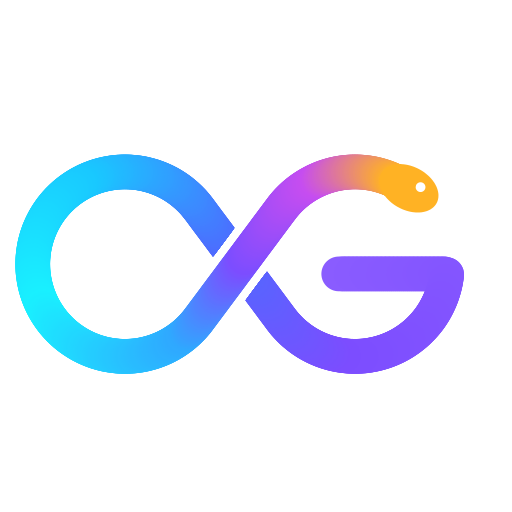

Gocpy
Синтаксис Go, скорость C, простота Python
Gocpy — компилируемый язык программирования со статической типизацией. Компилятор gocpy написан на Go, генерирует C и собирает нативный бинарник со сборщиком мусора Boehm GC. Исходники — файлы .gocpy, настройки модуля — gocpy.yml.
Установка
brew install --cask rusfort/tap/gocpy
curl -fsSL https://raw.githubusercontent.com/rusfort/gocpy/HEAD/install.sh | sh
go install github.com/rusfort/gocpy/cmd/gocpy@latestПример
package main
import "std/fmt"
func main() {
for i in 3 {
fmt.Println(f"hello, gocpy {i}")
}
}Исходный код и документация: github.com/rusfort/gocpy